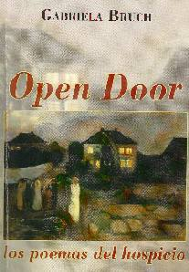

El fantasma del tiempo
Por Graciela María Casartelli,
Unquillo, editora de "Vida Reflexion" |
Hoy les acerco, una obra de la escritora argentina, GABRIELA BRUCH
, cuyo título es “OPEN DOOR”(1)
y su contenido son-
los poemas del hospicio- que nos introduce en un ámbito, que bien describe
en el prólogo Aldo Luis Novelli, como un “mundo paralelo,
mundo alucinado y alucinante, un mundo rechazado por el mundo racional”
que es el espacio en que se desenvuelve una colonia
psiquiátrica de puertas abiertas y un pueblo que nació alrededor
de esa colonia, en la provincia de Buenos Aires, Argentina.
La presencia de esta institución, marca
una línea divisoria , entre “los que están afuera”,
de quienes se supone, son “personas normales”,
habitantes de la luz de la libertad, de la creatividad; los que están
“capacitados” para desenvolverse en “la vida” por sí
mismos, que
de alguna manera plasman el ideal humano “deseado” y marcan la barrera,
con “los otros”; los que están internados: “gente anormal”,
habitantes de las sombras, presos en su enfermedad a su paso por el mundo de
las cosas…
“…tu crucifixión en la calle
de los locos” (página 93)
“…como un condenado a muerte” (41)
“…me voy de viaje/rotulada como otra más…” (41)
“…extraño frío que recorre el surco…”
(11)
Es que ellos configuran algo “cosificado”
para nosotros; “los del otro lado”, quienes nos subimos a un escalón
más alto, mirándolos
desde arriba, para no contaminarnos “con su enfermedad” (no vaya
a ser contagiosa) y también con una actitud de superioridad; pues,
qué lejos estamos “los cuerdos” de este lugar de condena…¿?
Y en el cuidado de la línea, figuras extrañas:
“…nunca descansan los que tienen la vara/ que mide la tregua/… ellos, los dioses de un edén lleno de mierda”//“tanta desvastación, tanto trabajo bien hecho/…pero a modo de suerte, adentro, un corazón late/quiero pensar que no es uno solo” (81)
La crítica, la autocrítica,
las razones esgrimidas y la sin razón , “se unen en una ironía
blasfema que poco sabe del amor” (57) en esta obra de Gabriela Bruch, quien examina estas situaciones desde una profesión; desde la institución con su atmósfera grupal que describe como una dinámica de relaciones “febriles” y donde finalmente, todos somos “pacientes” de un fenómeno que nos termina por convencer que es parte nuestra, aunque no lo queramos aceptar… |
 |
Alude enfáticamente al sentir de “ése” que está
confinado allí; con sus alucinaciones y delirios, ajeno a sí mismo,
despersonalizado y con nociones de tiempo y espacio desdibujadas.
“acantilado de un cuerpo abismal/que se derrumba//mapa
del corazón humano/donde se despedaza la historia” (79)
“un instante /náufrago/…uno solo/reposando sobre un corazón
que retumba” (77)
“…/del dolor, de la ausencia de los espejos rotos”…/vueltas,
más vueltas para anochecerme/cuando siempre/fui oscuridad…”
(73)
“los que no tienen voz, los que han perdido el espejo”…”territorio
medular habitado por las trampas del encierro” (37)
“el cuerpo cansado, extrañado/ajeno a sí mismo”…”un
despojo” (39)
“no conozco otros caminos/no se ver/temo desintegrarme…” (47)
“único hilo de una trama/que amenaza con desintegrarse”(57)
La institución, como bien señala Aldo Novelli (op.cit.), “es
un lugar atravesado por el dolor”, en el cual “un ángel que
ha perdido
la razón/nos dice en voz baja: bienvenidos al único lugar desvastado/en
donde fantasea la ternura (9); donde, en cambio,
la realidad es otra:
“basta de palabras/¿qué hay
de la ternura?/¿podrías escribir sobre eso?/sos incapaz…”
(75)
“todos opinan/todos/y nadie entiende…” (53)
“nada es desconocido aquí/y eso es lo terrible…”(13)
“quisiera sólo escuchar una voz/que pulverizara tanto odio/tanta
mentira/desolación…”(57)
“esparcidas las migajas del abandono/el mundo se retuerce dentro del hospital
psiquiátrico…”(81)
Se percibe como sitio “sin salida”:
“esta prisión me asfixia…”
(45)
“faltaba tan poco para llegar…/el tiempo lo succionó justo
antes de que abriera la boca/” (83)
Las prácticas profesionales:
“alejarme de sus costas/de su temeridad/de su olor a traición”//“otra vez quieren demostrar que estoy loco y qué métodos utilizan”(71)
El sentir de la persona que cumple el rol de profesional:
“Escribir sobre para por con vos, es una lucha contra el propio pavor de nombrar(te)…/”(37)
Y en su caso, también es el poeta que con
los ojos absortos, contempla un mundo que parece derrumbarse dentro de sí
mismo,
pero con la capacidad de fingir que está entero…
“El poeta galopando su propia desmesura…” (33)
se pregunta y se derrama en “el marco intemporal de mi desangrada materia”
(35)
/”Y qué hago aquí? ¿Qué es lo que tengo que
ver? (33)
Lugar donde la esperanza asoma tímidamente tal haz de luz trémulo
y medroso por quedar sólo en un intento fallido:
“allá en el cielo negro, frío
y lejano/se escribe un poema poderoso/que muere apenas cae a tierra…”
(59)
“¿Qué significa esta tierna sospecha/clavada en el centro
del alma?(91)
“tu voz me anunció la lluvia”/…”tu voz/así/como
una caricia” (85)
“mi amor en la colonia de alienados…/hojas secas martirizadas/…permitiéndole
la entrada de algún sueño” (63)
Y finalmente el fantasma del tiempo… encerrado en el hospicio “fingiendo una eterna circularidad”:
“qué de aquellos días”
(69)
“sí el tiempo se anuncia” (89
“mientras el tiempo de tanto llorar, mientras la muerte” (65)
“…tiempo se detiene”(23)
“recuerdos…./en un tiempo…” (25)
“yo sé que alguna vez” (23)
“…del tiempo que fue y no será… (29)
“…cuando el tiempo ruge y pide y pide” (31)
“los tiempos de los susurros en la noche incierta” (37)
Mientras el tiempo… “de tanto llorar/de tanto esperar” (66)
“Proyección animal de un tiempo infinito/…/Tiempo infinitesimal
que borra el espanto de tus ojos” (33)
“tiempos tan extraños, tiempos de nubes violetas acechando la tarde…”
(49)
“el tiempo no sabe de sentencias/ni de falsos profetas, apenas escurre
entre sus dedos/el agua fatal…” (57)
Y seguiremos caminando en este mundo insulso, rodeados de muchas cosas; porque
ellas nos permiten sentir que somos alguien…
Y seguiremos luchando contra enigmas nunca resueltos
y confinando gente al olvido; protegiéndonos de
ellos y de nosotros…Qué ironía…
(1)“Open Door”-los poemas del hospicio-Diseño de Alejandro Jorge Rebagliati. Impreso en Weben s.a. Mayo de 2006
Gabriela Bruch es poeta ,
residente en el sur del Gran Buenos Aires-Argentina. Tiene tres libros
de poemas editados : "Naturaleza de lo Oscuro" (2000); "Open
Door, los poemas del hospicio"(2006) y "Agosto, Febrero, Diciembre"
(Ediciones de la Iguana, 2008). Edita y dirige la revista "La Iguana
" , destinada a la difusión de artistas no consagrados de
Latinoamérica , tanto en su versión gráfica como
virtual. Actualmente coordina los Talleres de Técnicas de Creación Literaria dependiente de la Secretaría de Cultura de Lomas de Zamora. E-mail: revlaiguana@yahoo.com.ar |
Musicalización "Clon" mid